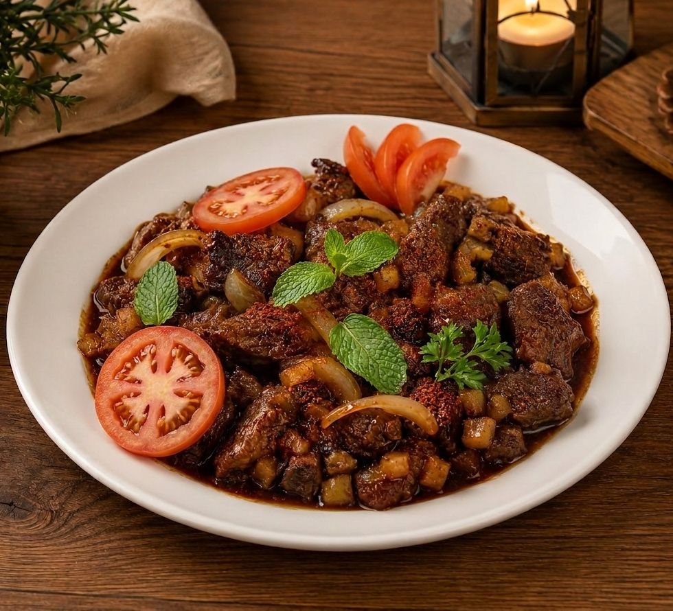

Resep Kreatif Daging Sapi: Glaze Kopi-Kakao dengan Sambal Nanas Asap
Kalau Anda ingin mencoba masakan daging sapi yang berbeda dari biasanya, resep ini bisa menjadi pilihan yang menarik. Perpaduan rasa gurih, manis, sedikit pahit, pedas, dan segar membuat hidangan ini terasa istimewa. Resep ini cocok untuk makan malam bersama keluarga atau untuk disajikan saat ada acara khusus.

Daging sapi biasanya dimasak dengan bumbu yang cenderung umum, seperti kecap, lada, atau bawang. Pada resep ini, daging sapi diberi sentuhan kopi dan kakao untuk menghasilkan rasa yang lebih dalam dan kompleks. Kopi memberi aroma yang khas, sedangkan kakao menambah kesan hangat dan lembut pada saus. Sebagai pelengkap, sambal nanas asap memberikan rasa pedas, asam, dan segar yang menyeimbangkan rasa daging.
Daging Sapi Glaze Kopi-Kakao dengan Sambal Nanas Asap
Bahan utama
- 500 gram daging sapi has luar, sirloin, atau brisket tipis
- 2 sdm kecap asin
- 1 sdm saus tiram
- 1 sdm madu
- 1 sdt bubuk kopi hitam instan atau espresso bubuk
- 1 sdt bubuk kakao tanpa gula
- 3 siung bawang putih, cincang halus
- 1 bawang bombay
- 1 sdm minyak
- 1/2 sdt lada hitam
- 1/2 sdt garam
- 1 sdm air jeruk nipis
Bahan sambal nanas asap
- 150 gram nanas, cincang kecil
- 5 buah cabai merah keriting
- 3 buah cabai rawit merah
- 2 siung bawang merah
- 1 siung bawang putih
- 1 sdm gula merah
- 1/2 sdt garam
- 1 sdm air asam jawa
- 1 sdm minyak
sedikit smoked paprika atau daun salam yang dibakar sebentar untuk memberi aroma asap
Pelengkap
nasi hangat, mashed potato, atau roti panggang
daun ketumbar atau parsley
bawang goreng
Cara membuat
1. Marinasi daging
Campurkan kecap asin, saus tiram, madu, bubuk kopi, bubuk kakao, bawang putih, lada hitam, garam, dan air jeruk nipis. Aduk hingga rata, lalu lumuri daging sapi dengan bumbu tersebut. Diamkan minimal 30 menit. Jika ingin rasa lebih meresap, simpan di dalam kulkas selama 2 jam.
2. Membuat sambal nanas asap
Haluskan cabai merah, cabai rawit, bawang merah, dan bawang putih. Potong-potong tebal bawang bombay. Tumis dengan minyak sampai harum. Masukkan nanas cincang, gula merah, garam, dan air asam jawa. Masak sampai agak mengental dan nanas mulai lembut. Tambahkan sedikit smoked paprika atau aroma daun salam bakar agar terasa lebih khas. Setelah matang, angkat dan sisihkan.
3. Memasak daging
Panaskan wajan dengan sedikit minyak. Masukkan daging sapi dan masak sampai berubah warna dan kecokelatan. Jika menggunakan irisan tipis, masak sebentar saja agar daging tetap empuk. Tuang sisa bumbu marinasi, lalu masak sampai mengental dan melapisi daging seperti saus glaze.
4. Penyajian
Sajikan daging sapi di atas nasi hangat, mashed potato, atau roti panggang. Tambahkan sambal nanas asap di samping atau di atas daging. Taburi bawang goreng dan daun ketumbar atau parsley agar tampilannya lebih menarik.
Tips agar hasil lebih enak
- Gunakan kopi secukupnya agar rasa tidak terlalu pahit.
- Kakao sebaiknya tanpa gula supaya rasa tetap seimbang.
- Jika ingin hasil yang lebih lembut dan gurih, tambahkan sedikit mentega pada akhir proses memasak.
- Untuk daging yang lebih empuk, pilih brisket dan masak dengan api kecil lebih lama.
- Untuk versi cepat, gunakan daging has dalam yang diiris tipis.
Resep ini memberikan pengalaman rasa yang berbeda dari masakan daging sapi pada umumnya. Perpaduan kopi, kakao, dan sambal nanas menciptakan hidangan yang unik dan tetap mudah dibuat di rumah.